Задача урока: написать функции обращения к
БД, рассмотреть отличие методов вывода запроса и написать подготовленные
запросы.
На занятии мы
узнаем:
1.
Из чего состоят массивы.
2.
Как строятся функции.
3.
Как добавлять параметры.
4.
Какова структура построения
подготовленных запросов.
Создадим файл dp.php по следующему пути: SOCIALSITE/application/database.
Сразу же
произведем базовую настройку (рис. 7.1).
|
|
Выражение «require» - аналогично include, за исключением того, что в случае возникновения
ошибки он также выдаст фатальную ошибку уровня E_COMPILE_ERROR. Другими
словами, он остановит выполнение скрипта, тогда как include только выдал бы
предупреждение E_WARNING, которое |
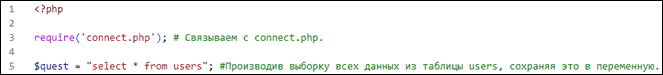
Рис. 7.1.
Настройка db.php
Переходим на ранее созданную
таблицу users посредством сайта. Входим в
раздел «Вставить» и заполняем основные поля: admin, us_name, email, age, password.
Убеждаемся
в корректной отработке ранее созданного запроса (рис. 7.2).
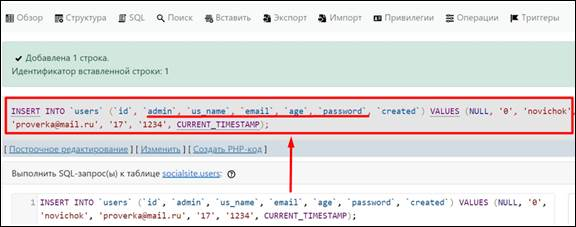
Рис. 7.2.
Создание нового элемента в таблице
Возвращаемся к работе с db.php. Создаем функцию printUser с входной переменной value. В теле функции применяем метод print_r для вывода текста на экран в целях
отладки, а также производим дополнительную надстройку: формируем ловца ошибок и
обращение к функции printUser.
|
<?php require('connect.php');
//подключение //вывод информации на страницу function printUser($value){ print_r($value); } //запрос всех данных из таблицы $quest
= "select* from users"; //применяем глобальный метод
prepare, используя метод pdo. $request =
$pdo->prepare($quest); $request->execute();//выполняем запрос //создаем переменную для отслеживания
ошибок. //Получаем информацию о наличии
ошибки методом errorInfo() $errorIn =
$request->errorInfo(); if ($errorIn[0]!==PDO::ERR_NONE){
//проверка на наличие ошибки print($errorIn[2]); //вывод информации в случае
ошибки exit(); } $date
= $request->fetch(); //Получаем строку из бд printUser($date);
//выводим
строку отправив данные в printUser |
Переходим на localhost/socialsite/application/database/db.php. Убеждаемся в наличии информации по
запросу, подтверждая работу написанной функции. Однако вывод данных идёт
сплошным массивом в единую строку. Возвращаемся к редактору кода и модифицируем
код (рис. 7.3).
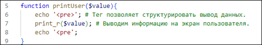
Рис. 7.3.
Добавление тега для вывода в более читаемой форме
Обновляем страницу. Убеждаемся,
что тег работает, а в таблице есть информация (рис. 7.4).
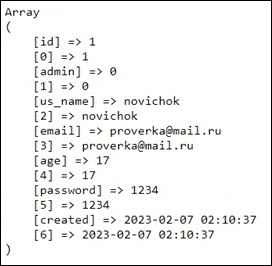
Рис. 7.4.
Итоги работы функции printUser после
модификации
Настроив базовую работу функции, проводим модификацию кода. Выводим всю работу по выборке в отдельную функцию ALLselect, внося в тело функции запросы и отлов ошибки. В дальнейшем при обращении к printUser мы получаем итог работы ALLselect, аргумент которого отправляем при вызове функции.
|
|
Функция «errorInfo» - получает расширенную информацию об ошибке, произошедшей в ходе
последнего обращения к базе данных. |
Текст
|
<?php require('connect.php');
//подключение //вывод информации на страницу function printUser($value){ echo '<pre>'; // тег структурирует данные print_r($value); echo '</pre'; } function
dbError($request){ //создаем переменную для отслеживания
ошибок. //Получаем информацию о наличии
ошибки методом errorInfo() $errorIn = $request->errorInfo(); if ($errorIn[0]!==PDO::ERR_NONE){
//проверка на наличие ошибки print($errorIn[2]); //вывод информации в случае
ошибки exit(); } return
true; //возврат
истины в случае отсутствия ошибок } function ALLselect($tables){ global $pdo; //объявляем глобальную переменную //запрос всех данных из таблиц по
переменной tables $quest = "select* from
$tables where admin = 1 and us_name = 'nik'"; //выборка данных из таблицы //применяем глобальный метод
prepare, используя метод pdo. $request =
$pdo->prepare($quest); $request->execute(); //выполняем запрос dbError($request);
//отправим
данные на проверку ошибок return
$request->fetchAll();//возврат итогов работы функции всей строки из таблицы } printUser(ALLselect('users'));//Отправляем таблицу users на
обработку в функцию Allselect |
Добавляем пользователя в таблицу,
как на рис. 1.82. Убеждаемся в наличии нового пользователя и смотрим результаты
работы на localhost/socialsite/application/database/db.php (рис. 7.5 – 7.6).
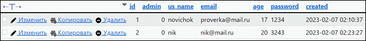
Рис. 7.5.
Проверяем наличие двух элементов в users – база данных
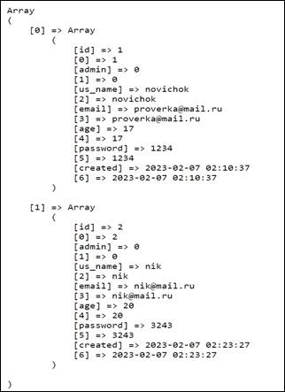
Рис.
7.6. Проверяем наличие двух элементов в users –
массив
Добавляем
параметр PDO::ATTR_DEFAULT_FETCH_MODE=>PDO::FETCH_ASSOC в options внутри файла connect.php, тем самым избавляясь от дублирования
при выводе данных в приложении db.php (рис. 7.7).
Рис. 7.7.
Измененная строка из connect.php
Убедимся
в корректной отработке написанного кода (рис. 7.8).
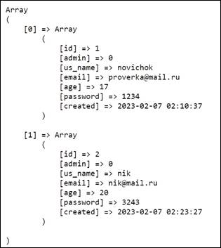
Рис. 7.8.
Вывод данных из таблицы users без
дубляжа
Произведем очередную модификацию кода. Выведем отлов ошибки в отдельно созданную функцию dbError, принимающую в качестве аргумента данные для проверки в переменную request. Изменяем условие выборки в переменной quest, добавляя проверку на наличие статуса администратора и совпадение имени пользователя. Убеждаемся, что модифицированный код работает (рис. 7.9).
|
<?php require('connect.php');
//подключение //вывод информации на страницу function printUser($value){ echo '<pre>'; // тег структурирует данные print_r($value); echo '</pre'; } function
dbError($request){ //создаем переменную для отслеживания
ошибок. //Получаем информацию о наличии
ошибки методом errorInfo() $errorIn = $request->errorInfo(); if ($errorIn[0]!==PDO::ERR_NONE){
//проверка на наличие ошибки print($errorIn[2]); //вывод информации в случае
ошибки exit(); } return
true; //возврат
истины в случае отсутствия ошибок } function ALLselect($tables){ global $pdo; //объявляем глобальную переменную //запрос всех данных из таблиц по
переменной tables $quest = "select* from
$tables where admin = 1 and us_name = 'nik'"; //выборка данных из таблицы //применяем глобальный метод
prepare, используя метод pdo. $request =
$pdo->prepare($quest); $request->execute(); //выполняем запрос dbError($request);
//отправим
данные на проверку ошибок return
$request->fetchAll();//возврат итогов работы функции всей строки из таблицы } printUser(ALLselect('users'));//Отправляем таблицу users на
обработку в функцию Allselect |
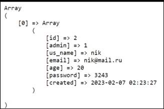
Рис. 7.9.
Результат работы итоговой версии кода
Откроем Visual Studio Code и подготовим запрос. Запросы состоят из определенных условий и функций. Обратимся к функции «Allselect» и модифицируем ее. Чтобы передавать параметры, необходимо указать их в «Allselect» (рис. 7.10).
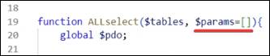
Рис. 7.10. Добавление параметров
Получив данный массив, необходимо разбить его на ключ и значение, чтобы впоследствии использовать для получения каких-либо данных. Сделаем это с помощью метода «foreach», который позволяет последовательно перебрать все элементы массива (рис. 7.11).
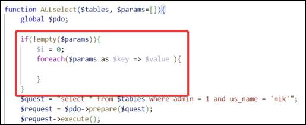
Рис. 7.11. Применение метода foreach
После закрывающей скобки функции, прямо перед «printUser», укажем параметры (рис. 7.12). Это необходимо, чтобы во время использования функции можно было вводить параметры по мере необходимости.
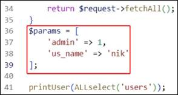
Рис. 7.12. Подготовленный запрос
Так как условия передаются через параметр, их можно удалить (рис. 7.13).
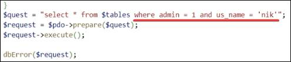
Рис. 7.13. Удаление условий
Проверим условие: если параметр не является числом, будут подставляться различные значения.
Если вводить значение value, то оно должно идти через одинарные кавычки, иначе запрос работать не будет. Поэтому сделаем предпроверку, чтобы значения value записывались в одинарные кавычки.
Если массив параметров не пустой, заходим в тело условия. Значение i равняется 0. Для прохождения по всему массиву запускаем цикл «foreach», где массив разбивается на ключ и его значение. Затем проверяем значение: если оно не является числом, то «value» записывается как конкатенация одинарных строчек. Далее, если i является 0 (т. е. первый проход цикла), то прописываем «where», а затем ключ-значение. При этом в else не попадаем.
После этого снова запускается foreach, где значение i уже будет равняться единице. Соответственно, будет всегда выполняться else на столько параметров, на сколько их передадим (рис. 7.14).
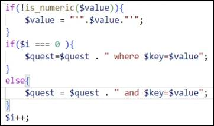
Рис. 7.14. Условия
Перенесем строку выше (рис. 7.15).
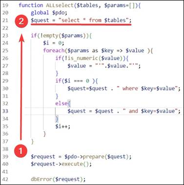
Рис. 7.15. Перенос строки
Также в Allselect необходимо передать параметры (рис. 7.16).
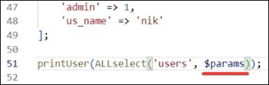
Рис. 7.16. Передача параметров в Allselect
Необходимо исправить ошибку выше, дописав слеш «/» (рис. 7.17).
|
|
Элемент <pre> - представляет собой предварительно отформатированный текст, который
должен быть представлен точно так, как написано в HTML-файле. |
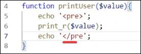
Рис. 7.17. Закрытие тега <pre>
Проверим работу программы. Возвращаемся на сайт, обновляем страницу (рис. 7.18).
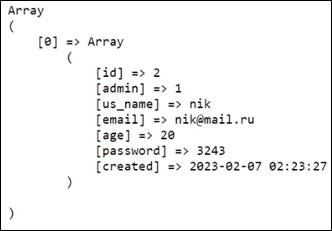
Рис. 7.18. Корректная работа сайта
В параметрах больше нет необходимости, их можно удалить вместе с «printUser» (рис. 7.19).
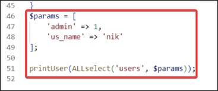
Рис. 7.19. Удаление параметров и printUser
Пометим комментарием над функцией, что в этом месте происходит получение данных из одной таблицы (рис. 7.20).
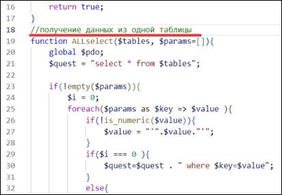
Рис. 7.20. Комментарий
Копируем функцию и вставляем ниже, чтобы на ее основе сделать получение одной строки из таблицы (рис. 7.21).
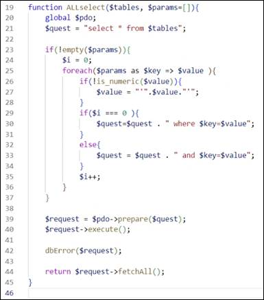
Рис. 7.21. Необходимый для копирования код
Отметим комментарием, что в этом месте будем получать одну строку из таблицы (рис. 7.22).
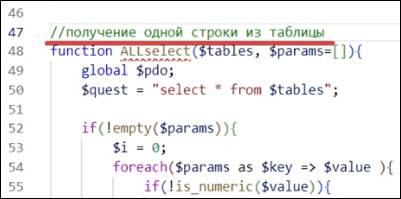
Рис. 7.22. Получение одной строки из
таблицы
Теперь заменяем функцию «Allselec» на «Oneselect», «fetchAll» – на «fetch». Благодаря «fetch» получаем одну строку из базы данных (рис. 7.23).
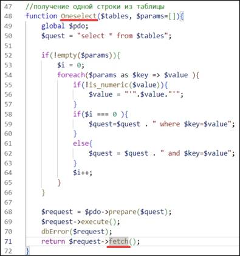
Рис. 7.23. Замена «Allselec» и «fetchAll»
Ниже допишем строку (рис. 7.24).
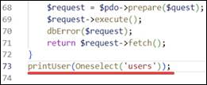
Рис. 7.24. Дополнение кода
Массив на сайте стал одинарным (рис. 7.25). Сколько бы значений ни было, он всегда будет выдавать только одну строку. Так мы визуально заметим разницу между «fetchAll» и «fetch».
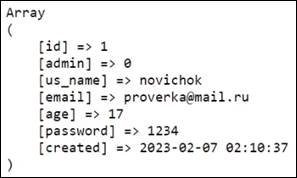
Рис. 7.25. Одинарный массив
Возвращаемся в код и удаляем строку, которую вставили ранее. Мы реализовали два подготовленных вопроса: на выборку одной строки из таблицы и выборку всех данных из одной таблицы (рис. 7.26).
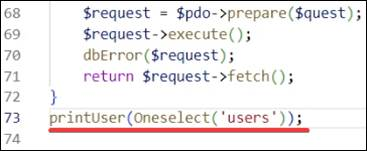
Рис. 7.26. Удаление строки
На этом седьмое занятие окончено!
В рамках этого занятия мы написали функции
обращения к базе данных, рассмотрели различные параметры передачи данных,
посмотрели на массивы и поработали с подготовленными запросами.
На следующем занятии мы напишем функции записи, удаления и обновления данных при обращении к
базе данных.
После прохождения каждого занятия рекомендуем повторить все термины,
которые были изучены, а также закрепить пройденный материал, ответив на
контрольные вопросы.
|
Это нужно запомнить |
|
|
|
Выражение «require» - аналогично include, за исключением того, что в случае возникновения
ошибки он также выдаст фатальную ошибку уровня E_COMPILE_ERROR. Другими
словами, он остановит выполнение скрипта, тогда как include только выдал бы
предупреждение E_WARNING, которое позволило бы скрипту продолжить выполнение. Функция «errorInfo» - получает расширенную информацию об ошибке, произошедшей в ходе
последнего обращения к базе данных. Элемент <pre> - представляет собой предварительно отформатированный текст, который
должен быть представлен точно так, как написано в HTML-файле. |
1. Как подключить файл нашего проекта к другому
файлу?
2. Что такое Array (Массив)?
3. С помощью какого знака создается переменная в PHP?
4. Как строится конкатенация в php?